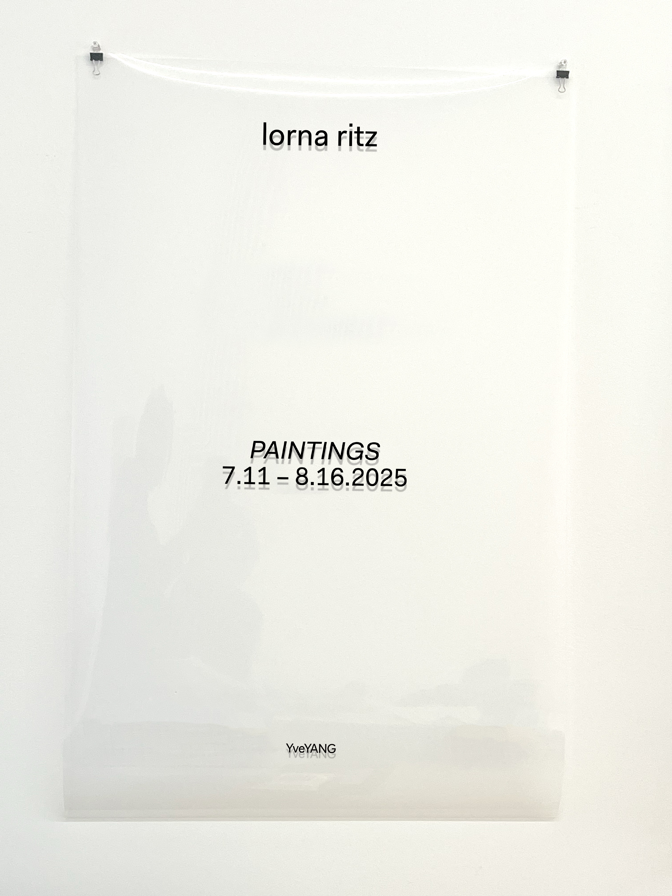
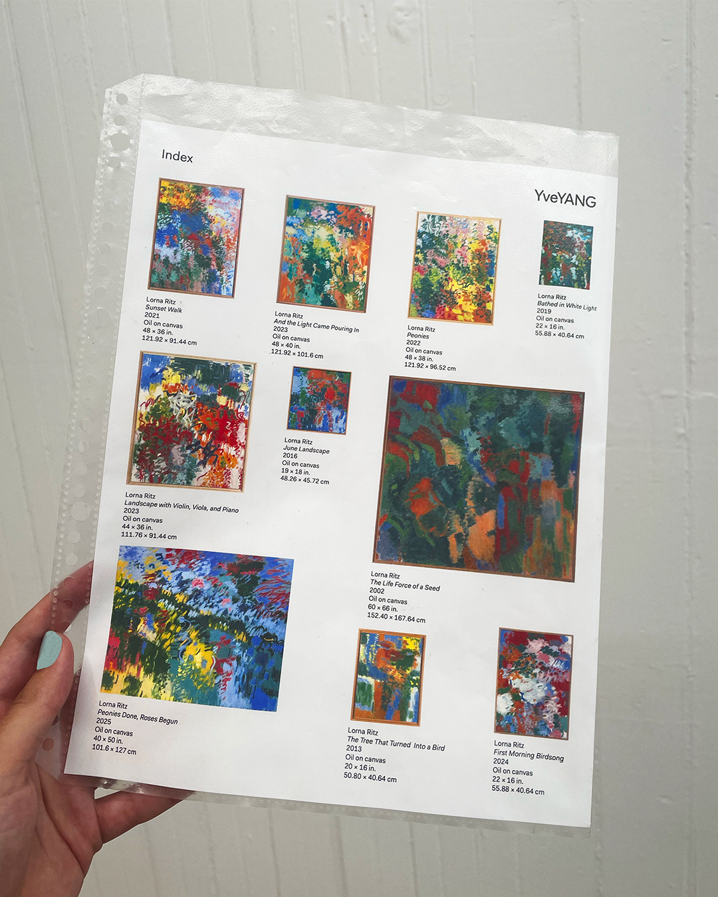
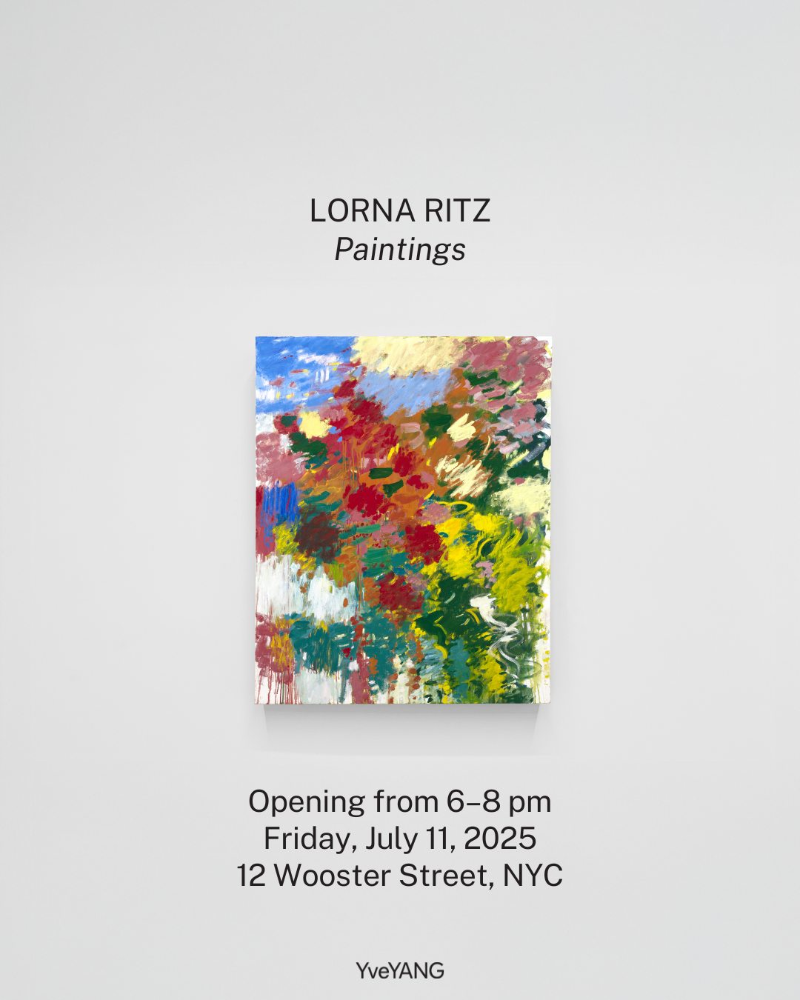

IRISH REPERTORY
THEATRE
THEATRE

During my internship with YveYANG Gallery, I produced various materials for Lorna Ritz’s exhibition Paintings. The exhibition was the abstract expressionist’s first major gallery show in New York. It featured never-before-seen paintings spanning two decades, all created in her studio barn, which overlooks mountains, trees, and wide-open fields. I strove to preserve the poeticism and intricacy of Ritz’s work when producing an exhibition index, vinyl poster, and various social media assets. Additionally, I spearheaded the production of a new gallery website, including the page for Paintings. A walkthrough of that page can be found here.


